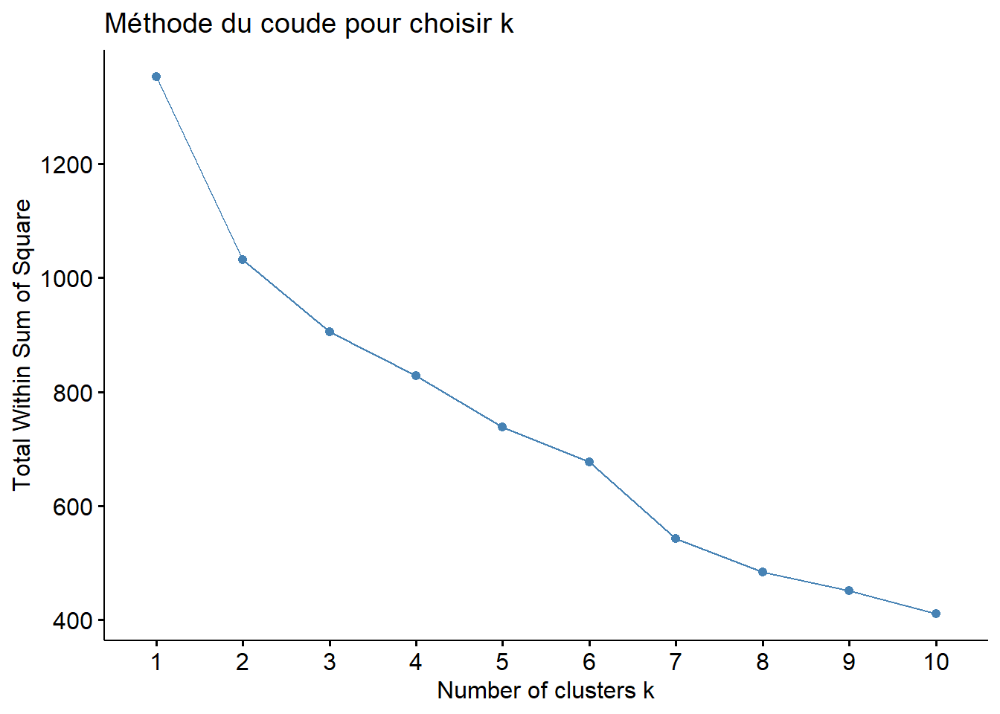

library(ggplot2)
library(dplyr)
library(tidyverse)
library(gridExtra)
library(psych)
library(cluster)
library(NbClust)
library(cluster)
library(factoextra)
library(FactoMineR)
library(tidygeocoder)
library(geosphere)Projet Clustering
Projet: Etude de marché
üìã Sc√©nario
Nous sommes en poste chez La poule qui chante, une entreprise française d’agroalimentaire qui souhaite se développer à l’international. Cependant, la liste des pays potentiels dans lesquels s’implanter est longue. Pour cela, nous allons réaliser une analyse des groupements de pays que l’on pourra cibler grâce à différentes méthodes de clustering, puis nous approfondirons l’étude de marché.
Ce projet a été proposé par Open Classeroom dans le cadre de leur formation data Analyst.
üéØ Objectifs
- Préparer, nettoyer et réaliser une analyse exploratoire :
Les données utilisées sont issues des statistiques de la Food and Agriculture Organization of the United Nations (FAO). Elles nous permettront de définir les critères de l’analyse. Ces critères, seront appelés indicateurs dans la suite de l’étude. - Réaliser le clustering des pays grâce à la classification ascendante hiérarchique (CAH) et à la méthode des k-means puis réaliser une analyse en composantes principales (ACP).
Librairies
I. Importation des données et préparation des données
I.1. Importation
data <- read.csv("dataset/indicateurs-pays-2017.csv", header = TRUE, sep = ",")I.2. Voir l’en-tête pour avoir une idée de la structure de nos données
head(data) pays population_milliers_hab evolution_population_pct
1 Afghanistan 36296.113 3.29
2 Afrique du Sud 57009.756 1.40
3 Albanie 2884.169 -0.45
4 Algérie 41389.189 1.72
5 Allemagne 82658.409 0.12
6 Angola 29816.766 3.57
consommation_volaille_pct tdi_pct disponibilite_kg_p_an taux_croissance_pct
1 0.42 50.88 1.53 4.865790
2 6.41 24.27 35.69 17.703800
3 1.29 74.51 16.36 9.765944
4 0.80 0.72 6.38 6.287893
5 2.06 49.24 19.47 6.441277
6 1.85 86.83 10.56 20.766647
revenu_par_habitant_usd indice_stabilite_politique
1 537.1263 -2.80
2 6537.5049 -0.28
3 4532.7920 0.38
4 4081.7751 -0.92
5 45734.5575 0.59
6 3791.4439 -0.38population_milliers_hab : Population du pays en milliers d’habitants.
evolution_population_pct : Taux d’évolution de la population en pourcentage.
consommation_volaille_pct : Pourcentage de la consommation de volaille dans l’alimentation.
tdi_pct : Taux de dépendance à l’importation (TDI) en pourcentage.
disponibilite_kg_p_an : Quantité de volaille disponible par habitant et par an en kg.
taux_croissance_pct : Taux de croissance économique en pourcentage.
revenu_par_habitant_usd : Revenu moyen par habitant en dollars US.
indice_stabilite_politique : Indice mesurant la stabilité politique (positif = stable, négatif = instable)
I.3. Assurons-nous que toutes nos variables sont au bon format
glimpse(data) Rows: 170
Columns: 9
$ pays <chr> "Afghanistan", "Afrique du Sud", "Albanie",…
$ population_milliers_hab <dbl> 36296.113, 57009.756, 2884.169, 41389.189, …
$ evolution_population_pct <dbl> 3.29, 1.40, -0.45, 1.72, 0.12, 3.57, 1.32, …
$ consommation_volaille_pct <dbl> 0.42, 6.41, 1.29, 0.80, 2.06, 1.85, 8.47, 7…
$ tdi_pct <dbl> 50.88, 24.27, 74.51, 0.72, 49.24, 86.83, 10…
$ disponibilite_kg_p_an <dbl> 1.53, 35.69, 16.36, 6.38, 19.47, 10.56, 54.…
$ taux_croissance_pct <dbl> 4.865790, 17.703800, 9.765944, 6.287893, 6.…
$ revenu_par_habitant_usd <dbl> 537.1263, 6537.5049, 4532.7920, 4081.7751, …
$ indice_stabilite_politique <dbl> -2.80, -0.28, 0.38, -0.92, 0.59, -0.38, 0.7…I.4. Vérifications des valeurs manquantes
colSums(is.na(data)) pays population_milliers_hab
0 0
evolution_population_pct consommation_volaille_pct
0 0
tdi_pct disponibilite_kg_p_an
0 0
taux_croissance_pct revenu_par_habitant_usd
0 0
indice_stabilite_politique
0 Il semblerait qu’on en ait pas.
II. Analyses descriptives
II.1. Voyons la distribution de nos variables
donnees_num <- data[, -1]
graphiques <- lapply(names(donnees_num), function(var) {
ggplot(data, aes(x = .data[[var]])) +
geom_histogram(bins = 30, fill = "steelblue", color = "black", alpha = 0.7) +
labs(title = paste("Distribution de", var), x = var, y = "Fréquence") +
theme_minimal()
})
do.call(grid.arrange, c(graphiques, ncol = 2))II.2. Quelques statistiques descriptives
stats <- describe(donnees_num)[, c("n", "min", "max", "mean", "median", "sd")]
names(stats) = c("n", "Minimum", "Maximum", "Moyenne", "Médiane", "Ecart-type")
stats n Minimum Maximum Moyenne Médiane Ecart-type
population_milliers_hab 170 52.05 1421021.79 43116.88 9757.83 153939.48
evolution_population_pct 170 -1.23 6.58 1.37 1.27 1.23
consommation_volaille_pct 170 0.04 13.04 2.98 2.21 2.50
tdi_pct 170 0.00 338.43 41.55 24.25 47.27
disponibilite_kg_p_an 170 0.13 72.31 20.38 18.24 15.88
taux_croissance_pct 170 -27.80 36.13 7.78 7.47 6.60
revenu_par_habitant_usd 170 435.87 81118.45 13728.00 5951.13 18172.76
indice_stabilite_politique 170 -2.94 1.60 -0.07 -0.02 0.90L’analyse statistique montre une forte hétérogénéité entre les pays. La population varie énormément, avec une moyenne tirée vers le haut par quelques pays très peuplés, tandis que la médiane révèle que la majorité ont une population plus modeste.
La consommation de volaille et sa disponibilité par habitant présentent également de grandes disparités, suggérant des différences peut-être culturelles ou économiques.
Le taux de dépendance aux importations est très variable, certains pays étant autosuffisants (0), d’autres très dépendants (338,43).
Le revenu par habitant varie de moins de 435,87 à plus de 81118,45 dollars, montrant de profondes inégalités économiques.
Enfin, si la plupart des pays connaissent une croissance économique positive et une stabilité politique modérée, certains affichent de fortes récessions (-27,80%) ou une grande instabilité, ce qui représente un risque pour une implantation.
III. Classification hiérarchique ascendante
III.1. Calcul de la matrice de distance (méthode Euclidienne)
donnees_num_norm <- scale(donnees_num) # Normaliser les données
d <- dist(donnees_num_norm, method = "euclidean")III.2. Réalisation de la classification hiérarchique (méthode de Ward)
hc <- hclust(d, method = "ward.D")III.3. Visualisation du dendrogramme
plot(hc, labels = data$pays, main = "Dendrogramme - Classification Hiérarchique", cex = 0.6)III.4. Courbe de perte de l’inertie inter-classes et choix du nombre de groupes
plot(rev(hc$height)[1:20],type="b")On peut voir que le nombre de cluster semble être égal à 4.
III.4. Faire apparaître les groupes sur le dendrogramme
plot(hc, hang=-1)
rect.hclust(hc, 4, border ="red")III.5. Déterminons ne nombre de groupes de façon automatique en utilisant NbClust du package NbClust
nbr <- NbClust(donnees_num_norm, distance = "euclidean", method = "ward.D") *** : The Hubert index is a graphical method of determining the number of clusters.
In the plot of Hubert index, we seek a significant knee that corresponds to a
significant increase of the value of the measure i.e the significant peak in Hubert
index second differences plot.
*** : The D index is a graphical method of determining the number of clusters.
In the plot of D index, we seek a significant knee (the significant peak in Dindex
second differences plot) that corresponds to a significant increase of the value of
the measure.
*******************************************************************
* Among all indices:
* 6 proposed 2 as the best number of clusters
* 1 proposed 3 as the best number of clusters
* 9 proposed 5 as the best number of clusters
* 1 proposed 10 as the best number of clusters
* 1 proposed 12 as the best number of clusters
* 3 proposed 13 as the best number of clusters
* 2 proposed 15 as the best number of clusters
***** Conclusion *****
* According to the majority rule, the best number of clusters is 5
******************************************************************* nbr$All.index
KL CH Hartigan CCC Scott Marriot TrCovW TraceW
2 3.5963 43.8014 21.0844 -3.3660 195.2093 3.003090e+16 20548.368 1072.4010
3 0.3632 34.9820 21.2686 -4.0180 396.7039 2.065371e+16 19033.529 952.8197
4 0.3694 33.1811 36.4477 -3.7203 579.4739 1.253019e+16 15267.317 845.1803
5 3.3739 39.2241 15.9202 1.3602 1028.9768 1.391377e+15 11221.080 693.0182
6 0.7909 37.3631 17.3653 2.2904 1128.6344 1.114845e+15 9015.374 632.0355
7 1.1235 37.0994 15.7265 4.3089 1214.5096 9.156407e+14 6687.174 571.5195
8 0.6832 36.8865 21.0459 5.8968 1295.3548 7.433201e+14 5543.800 521.2305
9 2.6910 38.8581 10.4866 8.8842 1430.1749 4.256569e+14 4259.957 461.3015
10 0.6000 37.7197 14.7640 9.8070 1484.2618 3.822963e+14 3652.116 433.0926
11 1.2508 38.3157 12.6293 11.6321 1554.2656 3.064424e+14 2990.331 396.5051
12 1.3631 38.5036 10.1256 12.9815 1660.6566 1.950436e+14 2522.027 367.3285
13 1.3747 38.1576 8.1005 13.7779 1719.0626 1.623482e+14 2107.657 345.2056
14 0.9982 37.4230 8.0204 14.1499 1762.8729 1.455110e+14 1949.128 328.2685
15 1.3715 36.8715 6.4569 14.5747 1835.7331 1.088149e+14 1903.100 312.2167
Friedman Rubin Cindex DB Silhouette Duda Pseudot2 Beale Ratkowsky
2 10.7828 1.2607 0.2928 1.9280 0.2062 0.8138 21.9588 1.1965 0.2889
3 16.1988 1.4189 0.2633 2.1398 0.1408 0.6533 20.1623 2.7324 0.2862
4 24.3558 1.5997 0.2501 1.8239 0.1737 0.6462 38.3323 2.8534 0.2744
5 38.5286 1.9509 0.2965 1.4388 0.1970 0.7127 22.5714 2.0929 0.2911
6 40.8434 2.1391 0.2878 1.3843 0.1846 0.7813 19.0342 1.4580 0.2838
7 42.0519 2.3656 0.2618 1.4450 0.1804 0.9780 0.7664 0.1157 0.2794
8 43.4413 2.5939 0.2506 1.3340 0.1997 0.5394 17.9342 4.3085 0.2719
9 45.8491 2.9308 0.2545 1.2353 0.2197 0.7323 11.6991 1.8737 0.2670
10 47.1295 3.1217 0.2414 1.2524 0.2157 0.6024 18.4843 3.3687 0.2587
11 48.2728 3.4098 0.2748 1.1584 0.2248 0.5990 10.0404 3.3166 0.2525
12 52.0262 3.6806 0.3348 1.1380 0.2352 0.5928 8.9315 3.3718 0.2457
13 53.5625 3.9165 0.3254 1.0808 0.2485 0.7040 10.9292 2.1394 0.2388
14 54.9127 4.1186 0.3166 1.1091 0.2270 0.7282 6.7198 1.8692 0.2321
15 58.3303 4.3303 0.3040 1.1568 0.2170 0.8472 4.6903 0.9181 0.2260
Ball Ptbiserial Frey McClain Dunn Hubert SDindex Dindex SDbw
2 536.2005 0.2589 0.2055 0.7644 0.0883 0.0011 2.3869 2.2260 1.6118
3 317.6066 0.3123 -0.1320 1.3766 0.0883 0.0017 2.6139 2.0917 2.5750
4 211.2951 0.3469 -0.3624 1.4826 0.0883 0.0019 2.4126 1.9459 0.8640
5 138.6036 0.4197 1.4421 1.4177 0.1126 0.0027 2.2969 1.8448 0.6362
6 105.3393 0.3861 0.5667 1.8911 0.1126 0.0027 2.2776 1.7353 0.5888
7 81.6456 0.3507 0.3162 3.0242 0.0905 0.0030 2.4098 1.6508 0.5636
8 65.1538 0.3428 -0.0750 3.4867 0.0905 0.0031 2.1678 1.5534 0.4923
9 51.2557 0.3587 0.2798 3.4620 0.0961 0.0032 2.0519 1.4969 0.4352
10 43.3093 0.3493 -0.0399 3.9799 0.0961 0.0033 2.2200 1.4471 0.4174
11 36.0459 0.3615 0.0043 3.9612 0.1140 0.0035 2.0817 1.4077 0.3852
12 30.6107 0.3676 0.0637 3.9882 0.1416 0.0035 2.0607 1.3686 0.3890
13 26.5543 0.3699 0.5938 4.0546 0.1416 0.0035 1.9961 1.3282 0.3777
14 23.4477 0.3520 0.1567 4.6196 0.1416 0.0036 2.3145 1.2940 0.3607
15 20.8144 0.3489 0.4206 4.8716 0.1416 0.0036 2.3046 1.2614 0.3475
$All.CriticalValues
CritValue_Duda CritValue_PseudoT2 Fvalue_Beale
2 0.7672 29.1296 0.2981
3 0.6806 17.8332 0.0064
4 0.7417 24.3818 0.0041
5 0.7213 21.6419 0.0352
6 0.7391 23.9997 0.1698
7 0.6676 16.9267 0.9986
8 0.6042 13.7594 0.0001
9 0.6603 16.4630 0.0645
10 0.6435 15.5122 0.0011
11 0.5525 12.1469 0.0018
12 0.5288 11.5843 0.0018
13 0.6338 15.0238 0.0336
14 0.5813 12.9672 0.0692
15 0.6338 15.0238 0.5024
$Best.nc
KL CH Hartigan CCC Scott Marriot TrCovW
Number_clusters 2.0000 2.0000 5.0000 15.0000 5.0000 5.000000e+00 5.000
Value_Index 3.5963 43.8014 20.5275 14.5747 449.5029 1.086228e+16 4046.237
TraceW Friedman Rubin Cindex DB Silhouette Duda
Number_clusters 5.0000 5.0000 5.000 10.0000 13.0000 13.0000 2.0000
Value_Index 91.1794 14.1729 -0.163 0.2414 1.0808 0.2485 0.8138
PseudoT2 Beale Ratkowsky Ball PtBiserial Frey McClain
Number_clusters 2.0000 2.0000 5.0000 3.000 5.0000 1 2.0000
Value_Index 21.9588 1.1965 0.2911 218.594 0.4197 NA 0.7644
Dunn Hubert SDindex Dindex SDbw
Number_clusters 12.0000 0 13.0000 0 15.0000
Value_Index 0.1416 0 1.9961 0 0.3475
$Best.partition
[1] 1 2 2 1 3 1 4 4 2 2 3 3 1 4 1 4 1 3 2 1 2 2 1 2 2 1 2 1 1 3 2 3 3 5 2 2 2
[38] 1 2 1 2 2 3 1 2 2 2 4 2 2 2 1 3 1 1 2 3 3 1 1 2 1 2 4 2 1 1 2 1 2 2 1 5 1
[75] 2 1 3 3 4 3 4 3 2 1 1 1 2 4 2 2 1 1 2 3 2 1 2 1 1 1 2 2 4 1 2 1 2 1 2 1 1
[112] 2 1 1 3 4 3 1 1 1 2 1 3 1 2 2 4 2 1 3 1 2 1 1 1 3 1 4 4 4 4 1 1 2 1 2 2 1
[149] 1 3 3 2 1 1 2 1 1 1 4 2 1 2 1 2 1 2 1 1 1 1Le nombre de cluster optimal semble être égal à 5. Pour une meilleur exhaustivité des groupes, partons sur 5.
III.6. Attribution du groupe à chaque pays
tree <- cutree(hc, k = 5)
tree [1] 1 2 2 1 3 1 4 4 2 2 3 3 1 4 1 4 1 3 2 1 2 2 1 2 2 1 2 1 1 3 2 3 3 5 2 2 2
[38] 1 2 1 2 2 3 1 2 2 2 4 2 2 2 1 3 1 1 2 3 3 1 1 2 1 2 4 2 1 1 2 1 2 2 1 5 1
[75] 2 1 3 3 4 3 4 3 2 1 1 1 2 4 2 2 1 1 2 3 2 1 2 1 1 1 2 2 4 1 2 1 2 1 2 1 1
[112] 2 1 1 3 4 3 1 1 1 2 1 3 1 2 2 4 2 1 3 1 2 1 1 1 3 1 4 4 4 4 1 1 2 1 2 2 1
[149] 1 3 3 2 1 1 2 1 1 1 4 2 1 2 1 2 1 2 1 1 1 1data$CAH <- as.factor(tree)III.7. Faire apparaître les groupes sur le dendrogramme
plot(hc, hang=-1)
rect.hclust(hc, 5, border ="red")III.8. Représenter les résultats à l’aide de la fonction clusplot du package cluster
clusplot(data, tree, color = TRUE, shade = TRUE, labels = 2, main = "Représentation")IV. K-MEANS
IV.1. Détermination du nombre optimal de clusters avec la méthode du coude
fviz_nbclust(donnees_num_norm, kmeans, method = "wss") +
ggtitle("Méthode du coude pour choisir k")
On part sur 5 clusters comme dans la méthode de la CAH
IV.2. Application de l’algorithme K-means avec 5 clusters
km <- kmeans(donnees_num_norm, centers = 5, nstart = 25)
data$kmeans <- as.factor(km$cluster)IV.3. Visualisation des clusters sur un plan (ACP)
fviz_cluster(km, data = donnees_num_norm, geom = "point", stand = FALSE) +
ggtitle("Clusters obtenus avec K-means")IV.4. Visualisation des groupes par couple de variables
plot(data, col = km$cluster)
text(data,labels=row.names(data),col=km$cluster)
points(km$centers, col = 1:5, pch = 15,cex = 1.5)V. ACP
V.1. Réalisation de l’ACP
acp <- PCA(donnees_num_norm, graph = FALSE)V.2. Affichage des contributions des variables
barplot(acp$eig[,2])On choisit les 3 premiers axes pour notre analyse
V.3. Représentations des individus et des variables sur les axes 1 et 2
var1 <- plot(acp, choix = "var" , axes = c(1,2))
var1ind1 <- plot(acp, choix = "ind" , axes = c(1,2))
ind1L’axe 1 oppose les pays ou régions avec une forte disponibilité alimentaire (positivement corrélée) et ceux où cette disponibilité est plus faible. L’axe 2 semble quant à lui distinguer les pays à forte croissance économique des autres.
La majorité des individus sont concentrés autour de l’origine, ce qui signifie que la plupart des pays ont des valeurs modérées sur ces dimensions.
Certains pays se détachent aux extrêmes (comme les points 73 et 34), suggérant qu’ils ont des valeurs très particulières sur ces dimensions (une faible consommation ou une forte croissance économique).
V.4. Représentations des individus et des variables sur les axes 1 et 3
var2 <- plot(acp, choix = "var" , axes = c(1,3))
var2ind2 <- plot(acp, choix = "ind" , axes = c(1,3))
ind2L’axe 3 permet de différencier les pays selon leur stabilité politique et leur taux de développement industriel. Il est intéressant de voir que la disponibilité alimentaire est peu corrélée avec cet axe.
On observe une dispersion des individus différente de celle du premier graphique. Ici, la stabilité politique et l’indice de développement influencent davantage la répartition des pays.
Certains points (comme 73 et 34) se démarquent à nouveau, indiquant que ces pays ont des caractéristiques extrêmes sur ces dimensions.
V.5. Conclusion
grid.arrange(var1, ind1, var2, ind2)Conclusion*
L’axe 1 représente la disponibilité alimentaire, la stabilité politique, le revenu par habitant et la consommation.
L’axe 2 représente la croissance économique
L’axe 3 est lié à la taile de la population et au taux de dépendance à l’importation.
Projeter sur les axes 1 et 3 serait donc plus optimale pour notre analyse.
VI. Représentation des individus, et boxplots des variables sur les axes 1 et 3 de l’ACP.
Les analyses CAH et K-means convergent vers une segmentation en 5 clusters. Les pays les plus intéressants pour l’implantation sont ceux qui combinent :
Forte consommation de volaille
Faible disponibilité de vollaille
Stabilité politique
Croissance économique positive
VI.1. KMEANS
VI.1.1. Représentation des individus selon leur cluster
coord_indiv <- data.frame(acp$ind$coord)
coord_indiv$cluster <- as.factor(data$kmeans)
ggplot(coord_indiv, aes(x = Dim.1, y = Dim.3, color = cluster)) +
geom_point() +
labs(title = "Projection des individus sur Dim 1 et Dim 3",
x = "Dimension 1",
y = "Dimension 3")VI.1. 2. Création des Boxplots pour les clusters
donnees_num2 <- data[, !(names(data) %in% c("pays", "CAH", "kmeans"))]
graphiques <- lapply(names(donnees_num2), function(var) {
ggplot(data, aes(y = kmeans,
x = .data[[var]], fill = kmeans)) +
geom_boxplot(show.legend = FALSE) +
labs(title = paste("Distribution de", var, "par cluster kmeans"),
y = "Cluster",
x = var) +
theme_minimal()
})
do.call(grid.arrange, c(graphiques, ncol = 2))➡ Consommation de volaille
Le cluster 2 a la plus forte consommation.
Les cluster 3 et 5 viennent ensuite.
Les clusters 1 et 4 ont une faible consommation.
➡ Disponibilité de volaille
Le cluster 2 a la plus grande disponibilité → ❌ Pas idéal.
Les clusters 5 et 3 ont une disponibilité moyenne.
Les clusters 1 et 4 ont les disponibilités les plus faible ✅.
➡ Stabilité politique
Le cluster 5 a la meilleure stabilité politique ✅.
Le cluster 2, 3 et 4 ont (dans l’ordre décroissant) également une bonne stabilité politique.
Le clusters 1 a une stabilité négative ❌.
➡ Croissance économique
Les clusters 3 et 4 ont les meilleurs taux ✅.
Le cluster 2 a le taux de croissance le plus faible ❌.
Le cluster 4 semble le plus intéressant car il combine :
✅ Faible consommation de volaille
✅ Disponibilité plus faible que le cluster 5
✅ Bonne stabilité politique
✅ Croissance économique positive, et la plus élevée
✅ Populations très élevées
Le cluster 5 est aussi intéressant car il présente aussi des indices favorable à une implantation.
üîç Recommandation
Les pays des clusters 4 et 5 devraient √™tre prioris√©s pour l‚Äôimplantation de La Poule qui Chante üöÄ.
VI.2. CAH
VI.2.1. Représentation des individus selon leur cluster
coord_indiv$cluster_cah <- as.factor(data$CAH)
ggplot(coord_indiv, aes(x = Dim.1, y = Dim.3, color = cluster_cah)) +
geom_point() +
labs(title = "Projection des individus sur Dim 1 et Dim 3",
x = "Dimension 1",
y = "Dimension 3")VI.2.2. Création des Boxplots pour les clusters
graphiques <- lapply(names(donnees_num2), function(var) {
ggplot(data, aes(y = CAH,
x = .data[[var]], fill = CAH)) +
geom_boxplot(show.legend = FALSE) +
labs(title = paste("Distribution de", var, "par cluster CAH"),
y = "Cluster",
x = var) +
theme_minimal()
})
do.call(grid.arrange, c(graphiques, ncol = 2))
➡ Consommation de volaille
Le cluster 4 a la plus forte consommation.
Les cluster 2 et 3 viennent ensuite.
Les clusters 1 et 5 ont une faible consommation.
➡ Disponibilité de volaille
Le cluster 4 a la plus grande disponibilité → ❌ Pas idéal.
Les clusters 2 et 3 ont une disponibilité moyenne.
Les clusters 1 et 5 ont les disponibilités les plus faible ✅.
➡ Stabilité politique
Le cluster 3 a la meilleure stabilité politique ✅.
Les cluster 2 et 4 ont (dans l’ordre décroissant) également une bonne stabilité politique.
Les clusters 1 et 5 ont une stabilité négative ❌.
➡ Croissance économique
Les cluster 5 et 1 ont les meilleur taux ✅.
Le cluster 4 a le taux de croissance le plus faible ❌.
Les cluster 2 et 3 ont un taux dans la moyenne.
Le cluster 2 est le plus équilibré :
✔ 2e cluster en terme de consommation
✔ Disponibilité de volaille moyenne (donc pas saturé)
✔ Bonne stabilité politique
✔ Croissance économique correcte
Le cluster 3 pourrait être une alternative, bien que la consommation y soit légèrement plus faible.
Les clusters 5 et 1 ont une faible consommation et une instabilité politique ❌. Le cluster 4 a une forte consommation mais une disponibilité trop élevée, ce qui peut signifier un marché déjà bien fourni ❌.
üîç Recommandation
Les pays des cluster 2 et 3 sont les plus int√©ressants pour ‚ÄúLa Poule qui Chante‚Äù. üöÄ.
VII. Affinons nos résultats et identifions les pays qui nous intéressent.
VII.1. Identifications visuelle de nos clusters cibles.
g1 <- ggplot(coord_indiv, aes(x = Dim.1, y = Dim.3, color = cluster)) +
geom_point() +
labs(title = "Projection des individus sur Dim 1 et Dim 3",
x = "Dimension 1",
y = "Dimension 3")
g2 <- ggplot(coord_indiv, aes(x = Dim.1, y = Dim.3, color = cluster_cah)) +
geom_point() +
labs(title = "Projection des individus sur Dim 1 et Dim 3",
x = "Dimension 1",
y = "Dimension 3")
grid.arrange(g1, g2)Pour rappel, la CAH donnait les clusters 2 et 3, tandis que les kmeans donnait les clusters 4 et 5. On constate que les deux méthodes ont un cluster en commun: le cluster 3 de la CAH et le cluster 5 des kmeans.
VII.1. Identifications des pays dans notre cluster final.
pays_cibles <- data[data$kmeans %in% c("4","5"),]
pays_cibles$pays [1] "Allemagne"
[2] "Australie"
[3] "Autriche"
[4] "Belgique"
[5] "Canada"
[6] "Chine - RAS de Macao"
[7] "Chine, continentale"
[8] "Danemark"
[9] "États-Unis d'Amérique"
[10] "Finlande"
[11] "France"
[12] "Inde"
[13] "Irlande"
[14] "Islande"
[15] "Japon"
[16] "Luxembourg"
[17] "Norvège"
[18] "Nouvelle-Zélande"
[19] "Pays-Bas"
[20] "Royaume-Uni de Grande-Bretagne et d'Irlande du Nord"
[21] "Suède"
[22] "Suisse" VII.1. Affinons en terme de distance par rapport à la France.
Pour la recommandation finale, le critère décisif est la distance du pays vis-à-vis de la France. A la demande de l’entreprise, on pourrait choisir l’un de nos indicateur.
tbl <- tibble(address=c("France"))
tbl_coord <- tbl |> geocode(address)
coord_france <- c(tbl_coord$long,tbl_coord$lat)
tbl2 <- tibble(address = pays_cibles$pays)
tbl_coord2 <- tbl2 |> geocode(address)
tbl_coord2 <- tbl_coord2 %>%
mutate(coord_pays = pmap(list(long, lat), c))
tbl_coord2 <- tbl_coord2[,c("address", "coord_pays")]
result <- left_join(pays_cibles, tbl_coord2, by = c("pays" = "address"))
result <- result %>%
mutate(distance = purrr::map_dbl(coord_pays, ~distVincentySphere(coord_france, c(.x[1], .x[2]))))
result %>%
arrange(distance) %>% filter(pays != "France") %>%
select(pays, distance) pays distance
1 Allemagne 329815.8
2 Luxembourg 459766.1
3 Suisse 484651.6
4 Belgique 493619.4
5 Pays-Bas 683711.5
6 Autriche 932796.3
7 Royaume-Uni de Grande-Bretagne et d'Irlande du Nord 971833.1
8 Irlande 993302.1
9 Danemark 1167139.1
10 Suède 1675573.8
11 Norvège 2084779.2
12 Islande 2374977.9
13 Finlande 2378031.6
14 Canada 6509241.6
15 Inde 7242643.0
16 États-Unis d'Amérique 7723314.9
17 Japon 9845591.8
18 Australie 15227639.5
19 Nouvelle-Zélande 19117943.6
20 Chine - RAS de Macao NA
21 Chine, continentale NAConclusion finale :
Après avoir trié et pris en compte uniquement les pays les plus proches de la France, la liste des pays dans lesquels l’entreprise peut envisager de vendre se compose des 10 premiers pays les plus proches. Voici les 10 pays les plus proches de la France, en termes de distance géographique :
Allemagne : 329815,8 mètres
Luxembourg : 459766,1 mètres
Suisse : 484651,6 mètres
Belgique : 493619,4 mètres
Pays-Bas : 683711,5 mètres
Autriche : 932796,3 mètres
Royaume-Uni de Grande-Bretagne et d’Irlande du Nord : 971833,1 mètres
Irlande : 993302,1 mètres
Danemark : 1167139,1 mètres
Suède : 1675573,8 mètres
Ces pays sont les plus proches de la France en termes de distance géographique. Si l’entreprise est intéressée par l’expansion géographique, ces pays devraient être prioritaires. Les autres pays avec des distances plus grandes ou des données manquantes (comme la Chine) peuvent être considérés comme des options secondaires ou nécessitant une analyse supplémentaire.